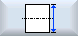
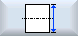

The workpiece is clamped in the main spindle parallel with the coordinate system. You measure a reference point in the X axis.
Requirement
-
A turning tool or drill bit is in the tool spindle or holder for scratching when manually measuring the workpiece zero.
- OR -
-
An electronic workpiece probe is inserted in the spindle and activated when measuring the workpiece zero automatically.
Procedure
  | 1. | Select the "Machine" operating area and press the <JOG> key. |
   | 2. | Press softkeys "Meas. workp." and "Measure outer diameter". Window "Measure outer diameter " opens. |
 | 3. | Select "Measuring only" if you only want to display the measured values. |
| | | - OR - |
| | 4. | In the selection box, select the required work offset in which the zero point should be saved. |
| | | - OR - |
   | | Press softkey "Select work offs." to select a settable work offset. In window "Work Offset – G54 ... G599", select a work offset in which the zero point should be saved and press the "In manually" softkey. You return to the measurement window.
|
| | 5. | Enter the target diameter of the workpiece in Ø. The target diameter corresponds, e.g. to the diameter specified in the workpiece drawing. |
 | 6. | Traverse the workpiece probe close to the workpiece edge that you wish to measure and press the <CYCLE START> key to automatically measure the workpiece zero. |
| Note |
Settable work offsetsThe labeling of the softkeys for the settable work offsets varies, i.e. the settable work offsets configured on the machine are displayed (examples: G54…G57, G54…G505, G54…G599). Refer to the machine manufacturer's specifications. |